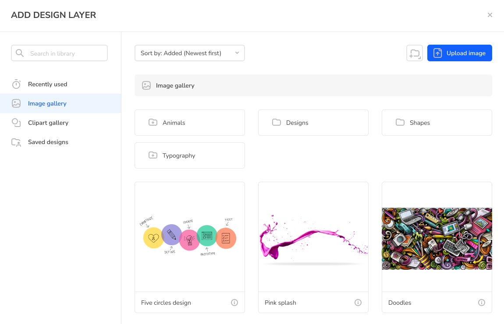
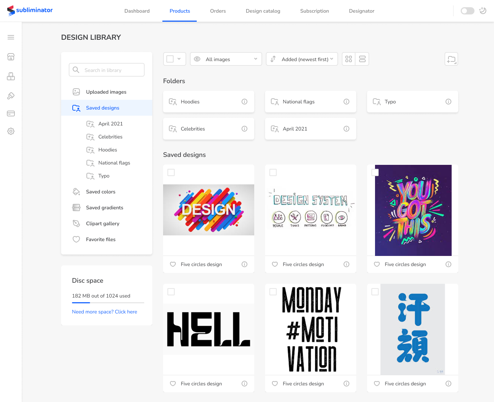
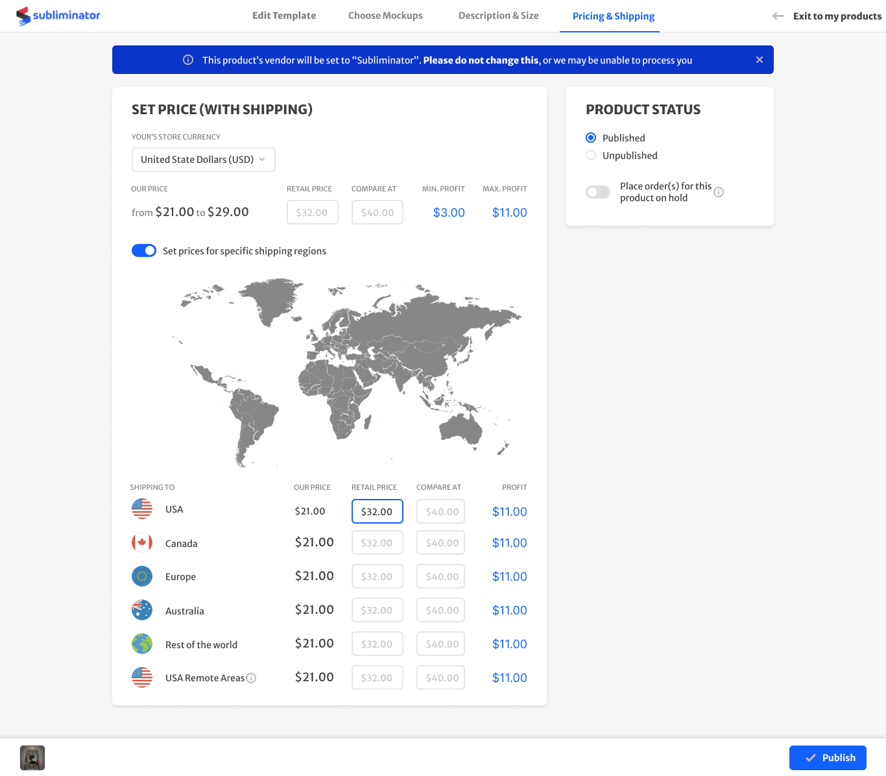

E-commerce · Sole designer · 2020-22
Designed for
People Who
Don't Design.
The Problem
600+ sellers - influencers, creators, small brands - were running real businesses on a print-on-demand platform whose tools were organised around the order of development rather than around how sellers work. Options were buried or oversized, with no visual hierarchy to guide a decision. The platform had grown by accretion, not by intent.
The Decision
Before opening Figma I audited fifteen-plus competitors - Printful, Printify, Gelato and the smaller players. Almost all of them were built for personal use. Subliminator's sellers weren't designing for themselves; they were designing products their own customers would buy. That meant the answer wasn't fewer features. It was a professional-grade toolset that someone who had never opened Photoshop could still operate.
Professional tools, zero learning curve
The Creator
The canvas engine already had the capabilities - multi-layer editing, full typography control, print-quality validation. The design problem was making those capabilities legible to someone running a business, not designing for a living.
A workspace that changes
with what you're holding
The sidebar adapts to the selected layer, so there are no modes to switch between and nothing to memorise. Contextual panels, progressive disclosure and inline feedback removed the need for onboarding entirely.
- Multi-layer canvas with context-aware panels - the tool shows what's relevant to the thing you just selected
- Print-quality validation happens inline, before an order can go wrong, not after
- Typography and placement controls at full strength, revealed only when they apply

Two ways in, one editor
A blank canvas is where a non-designer stops. So there are two ways in: a library of ready graphics and wordart for people with an idea but no assets, and upload for people who already have their own. Both paths land in the same editor - there's no beginner mode and no pro mode, just different starting points.
- Ready-made graphics and wordart as a starting point, not a template that boxes you in
- Upload for sellers arriving with their own artwork
- One editor for both, so nobody outgrows the tool they learned

From one design
to a collection
Sellers don't make a product. They make a collection - the same print on a t-shirt, a hoodie and a swimsuit. Saved compositions let them do that once and carry it across garments, instead of rebuilding the same artwork on every new blank.
- Saved compositions carry across garments - artwork, layers and typography move intact, so a range is built from a variation rather than from scratch
- Automatic scaling to each product's print area - the mechanical part is done; a print that works on a t-shirt still needs adjusting for swimwear, and that judgment stays with the seller

From design to published product
Running
a Business
Publishing a product is four steps - template, mockups, description and size, pricing and shipping. Three of them are mechanical. The fourth is where a seller sets what to charge, region by region, so the product actually earns - and it was the hardest screen in the platform.
Pricing that a seller
can reason about
The same product costs a different amount depending on where the buyer lives, so a single retail price either loses money on the expensive destinations or overcharges the cheap ones. A price here isn't a number - it's a set of numbers, one per region, and the buyer sees the one matching their address at checkout. The screen had to make that manageable for someone who isn't running a spreadsheet.
- Per-region rows, one currency - the seller works in their own store currency and never converts anything
- Regional pricing behind a toggle - sellers who don't need it never meet it; sellers who do get the full table
- Profit recalculates as you type, so the consequence of a price is visible at the moment of the decision

Four years before it was obvious
The First Time
I Designed
With AI
Sellers couldn't describe their own products. They knew exactly what they'd made and then froze at the empty description field - and the copy that did get written was thin enough to hurt conversion. So we generated it instead.
What surprised me wasn't the time it saved. It solved a confidence problem, not an efficiency one. People were happy to edit a paragraph they hadn't written and unwilling to write one from nothing. That was 2021, and it's the same pattern I built the AI features in the enterprise case around four years later: AI works best when it removes the blank page, not when it replaces the person.
Summary
Outcome
Everything shipped: garment creator, design library, seller dashboard, publishing flow, product views and the design system underneath. 600+ active sellers were running real businesses on the platform at the end of my tenure - a complete platform, fifteen months, one designer.
How I validated
The seller community was the feedback engine. Real stores, real friction, surfacing continuously - the product was small enough that sellers talked to us directly, so the loop from complaint to fix was days rather than quarters. No formal research programme, and at that size it didn't need one.
What I learned
Designing for people who don't call themselves designers isn't about removing power. It's about deciding when to reveal it. Every simplification I made by taking a capability away made the tool worse for the sellers who were succeeding; every one I made by hiding it until it applied made it better for everyone.
People were making a living on this platform. A mistake wasn't a bug report - it was somebody's lost sale.